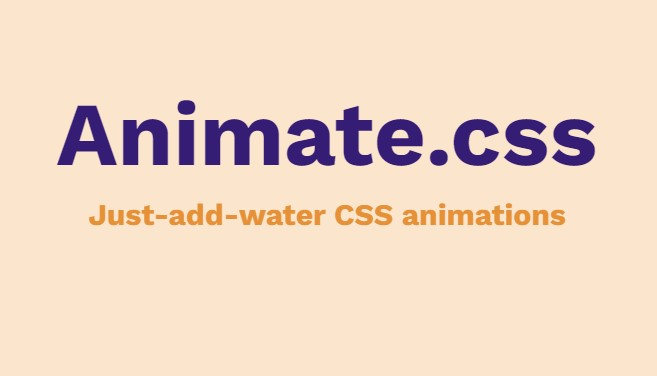

Blogs
McLuhan Reflection: Mediums as Messages
The McLuhan reading teaches us to think about how mediums become messages, how they influence those messages (in the methods a medium will use to communication a message), and possibly how those messages can even then become their own mediums. Mediums have social, political, economic, personal consequences - affecting our ideas of humanity...continue
Semantic Markup
read
Information Geographies
This critical reflection will dissect and discuss Towards a study of information geographies: (im)mutable augmentations and a mapping of the geographies of information by Mark Graham, Stefano De Sabbata, and Matthew A. Zook.... continue
UI and UX Analysis
When starting this UI and UX analysis and reflection, I realised that I have always understood these terms with a Graphic Design lens. Probably from having studied it for a year and encountering those terms for really the first time there. Back then though, I wasn't developing websites... continue

JavaScript Dependency/Library/API Research
 readReflection on Website
The webiste thus far is made up of very simple HTML and CSS but is backed by the content we've enaged with this year. A reading that struck out the most to me was McLuhan's "The Medium Is The Message". It made me think about how my webiste, regardless of its text and imagery, represents me...continue
Other Spewings
Capitalist Creativity
This essay will aim to define and situate the creative class as they have been deemed “model entrepreneurs” and then highlight the effects that the labour of the creative class undergoes within capitalism, digitilisation and the advancement of technology...continue
Intermediality and The Sims 3
In the piece of intermedial narration I made, I based the project off a “practiced-based research” approach. This approach is where the artefact in its final form is the central constituent of the project. I chose to create a crossover between the story of The Adventures of Tintin, a comic begun by Hergé (Georges Remi) in 19291 and the videogame, The Sims 3: World Adventures (2009)...continue